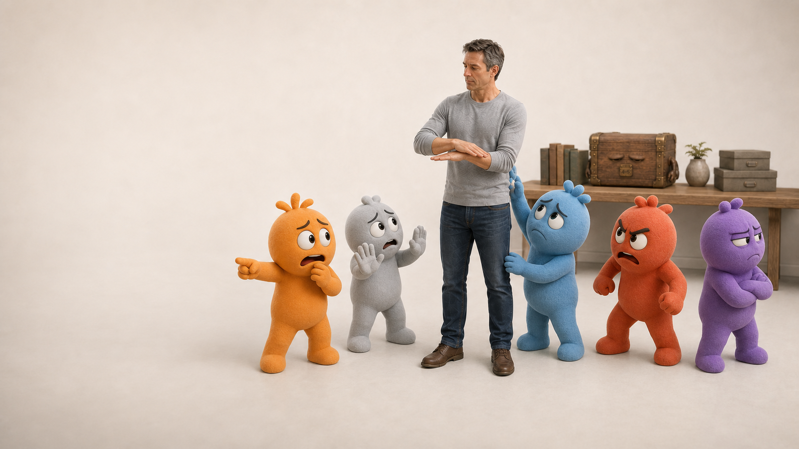
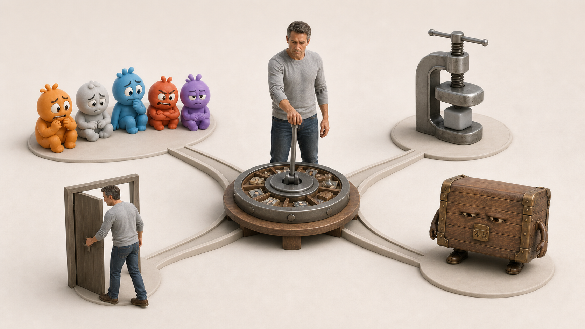
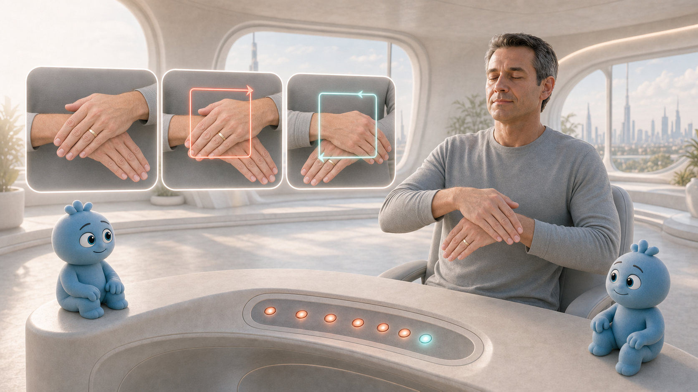
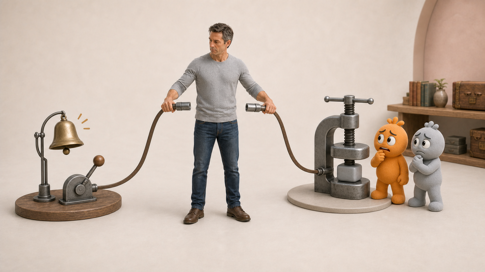
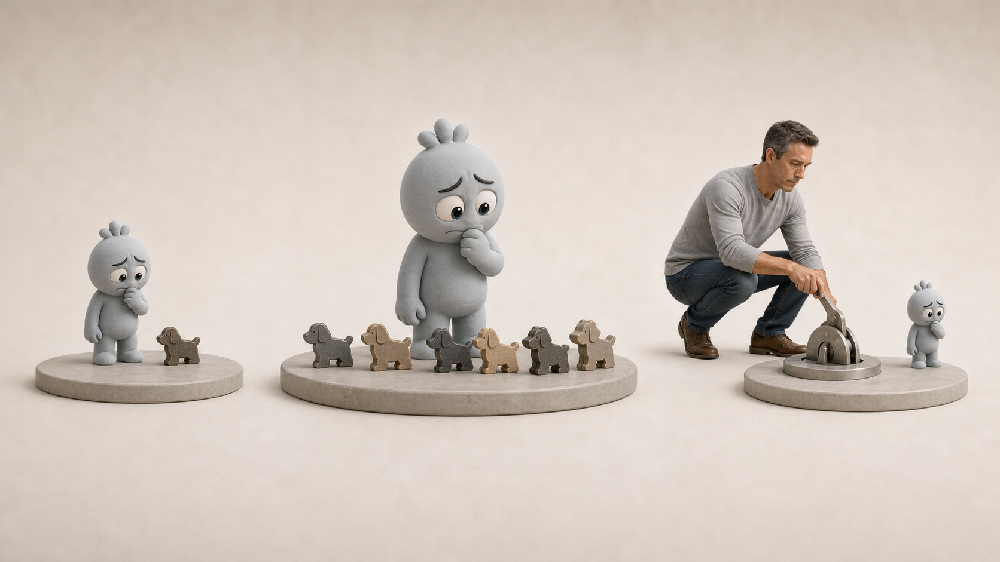
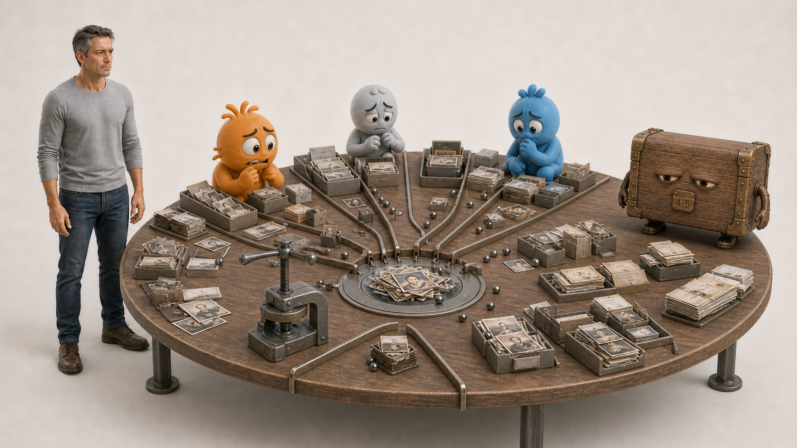
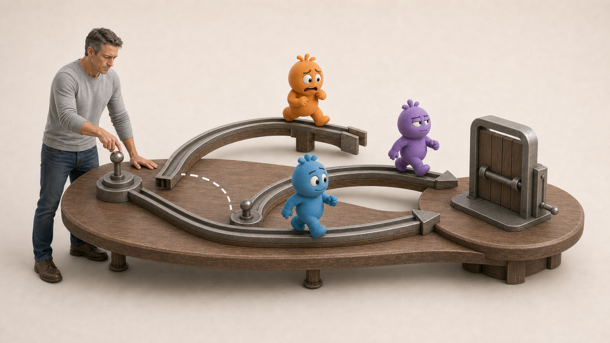
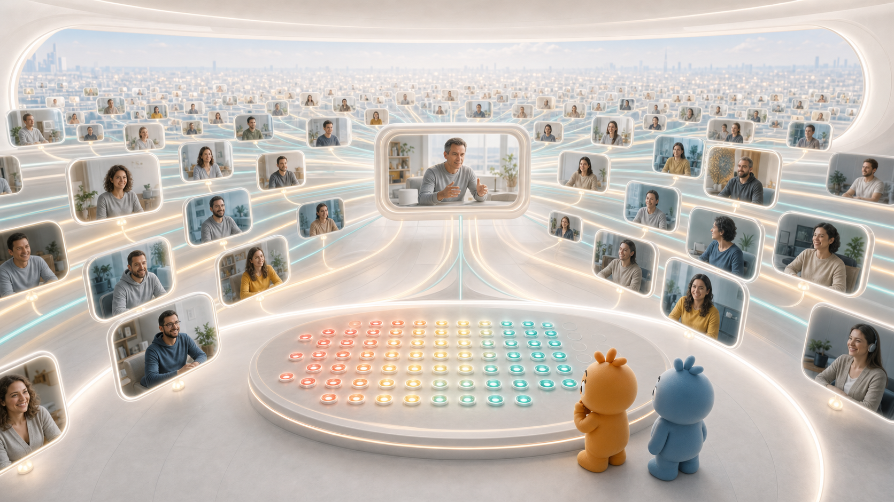

То, что автоматически включается сейчас: тревога, сжатие, вспышка гнева или желание исчезнуть.
Метод остановки автоматической реакции Off-Switch
Когда тело реагирует раньше, чем вы успеваете подумать
Вы ещё не решили, что ответить, а тело уже сжалось. Разговор только начался, а внутри хочется нападать, оправдываться или исчезнуть. Ситуация новая, но реакция включается по старому сценарию.
Метод Off-Switch помогает прервать цепочку: знакомый триггер → реакция тела → действие на автомате.
≈ 2 минутызанимает один цикл
0–5видно, что изменилось
Самостоятельноможно применять без специалиста рядом

Если сказать совсем просто
Метод остановки автоматической реакции Off-Switch — это телесная техника и последовательность работы, которая помогает остановить уже включившуюся автоматическую реакцию, снизить заряд связанных эпизодов и проверить изменение в реальной ситуации.У реакции много форм
Кажется, что проблем несколько, но их часто запускает один механизм

Событие или конкретная ситуация, с которой эта реакция связана.
Механизм, из-за которого похожая проблема снова возникает в жизни.
Сжимается грудь, горло или живот — ещё до того, как вы решили, что делать.
Одна фраза снова прокручивается в голове, а напряжение не отпускает несколько часов.
Решение откладывается не потому, что оно неверное, а потому, что реакция уже включилась.
Вы сказали «нет», но затем начинаете оправдываться или отменяете собственное решение.
Проявления могут выглядеть как разные проблемы, хотя их запускает одна последовательность: триггер включает знакомую реакцию тела, а она толкает к привычному действию. Off-Switch начинает с конкретной реакции, а затем при необходимости идёт к связанным событиям и повторяющемуся механизму.
Главный инструмент метода
Техника Off-Switch прерывает автоматическую реакцию
Движение используется в момент, когда реакция уже включилась. Оно помогает прервать её автоматическое продолжение, после чего человек проверяет тот же конкретный триггер ещё раз.

Для работы выбирают одну конкретную реакцию и проверяют изменение на том же самом триггере.
Когда: реакция уже ощущается в теле или включается при мысли о конкретной ситуации.
Что делает: прерывает автоматическое продолжение этой реакции.
Как проверить: снова обратиться к тому же триггеру и сравнить интенсивность по шкале 0–5.
К одной конкретной реакции, которая уже включилась.
Снизилась ли интенсивность и прекратилось ли автоматическое продолжение реакции.
Что происходит шаг за шагом
Сигнал остаётся. Автоматическая реакция останавливается.

Например, пришло резкое сообщение или начался сложный разговор.
Тело сжалось, замерло или приготовилось защищаться.
Реакция перестаёт сама разгоняться и толкать к привычному действию.
Сигнал остаётся понятным, но человек решает, говорить, уйти, подождать или поставить границу.
Воспоминание и здравый сигнал остаются. Автоматическая реакция прекращается.
Пример: фобия собак
Одна реакция может быть собрана из нескольких эпизодов.
Если после работы с одной сценой реакция снизилась, но не исчезла, её может поддерживать ещё одно связанное событие. Тогда эпизоды находят и проверяют по очереди.

Находится конкретная сцена, связанная с реакцией.
Но при проверке остаётся часть прежнего ответа.
Находится другая сцена, которая продолжает поддерживать реакцию.
Когда дело не в одном эпизоде
Когда нужно разобрать целую цепочку реакций
Цепочку стоит разбирать, когда реакция возвращается в похожих ситуациях, тема меняется, а тело отвечает одинаково, или после тревоги появляется вина. Иногда один триггер уже нейтрализован, но система находит другой вход — например, после установки границы включается страх последствий.

Диагностический признак
Реакция уменьшается, но возвращается через другой вход.
Что меняется в работе
Нужно увидеть, какие реакции, ожидания и решения поддерживают друг друга.
Задача уже не в том, чтобы ещё раз повторить тот же цикл, а в том, чтобы увидеть связанную последовательность. Сначала снижается основной эмоциональный заряд, затем точно перестраивается оставшийся механизм.
Два масштаба работы
Когда одного цикла недостаточно
Иногда конкретный триггер больше не запускает прежнюю реакцию, но человек продолжает попадать в похожие ситуации. Тогда дело уже не в одном эпизоде. Нужно увидеть механизм, который воспроизводит тот же результат через другие реакции, решения или ожидания.

Реакция на эту ситуацию изменилась.
Похожий результат продолжает возникать через другие реакции и решения.
Что делает техника Off-Switch
Уже включившийся ответ перестаёт продолжать разгоняться.
Прежние события больше не запускают ту же интенсивность.
Человек перестаёт автоматически повторять проблему в новых ситуациях.
Память и здравый сигнал остаются. Автоматическое продолжение реакции прекращается.
Не только ощущение, но и наблюдение
Три уровня, на которых видно результат
Интенсивность реакции снизилась.
Та же ситуация больше не запускает старый автоматический ответ.
Человек иначе разговаривает, выбирает, ставит границы и действует.
Изменение проверяется сначала на прежнем триггере, а затем в реальной жизни: в разговоре, решении, поездке, сне, работе, границах или возвращении к действию.
Предыдущая шестизанятийная программа · 2022
Более 7 000 человек применяли метод Off-Switch онлайн
Это была не серия индивидуальных сессий, а масштабная онлайн-программа: участники работали с конкретными реакциями на стресс, сравнивали состояние до и после и проверяли, что меняется в способности спать, работать, общаться и действовать.
Программа создавалась для поддержки людей во время войны; около 80% участников находились в Украине.


Эти данные не относятся к нынешнему тренингу Off-Switch в записи, групповой программе или индивидуальной работе с Угисом.
Среди участников, которые прошли все шесть занятий и заполнили итоговый замер, средний общий балл по 21 показателю снизился на 42–60%. В потоках, где проводили ещё один замер через месяц, изменения сохранялись. Это самооценочные данные реального проекта без контрольной группы, а не клиническое исследование.
Что стоит за цифрами
Главное доказательство: изменения в жизни
От нескольких миль до дальних поездок
Сначала снизили общий уровень напряжения, затем поработали с пугающим эпизодом на дороге и страхом новой панической атаки.
Вернулись границы и практические действия
Вместе со снижением балла человек стал увереннее защищать рабочие границы, занялся финансами и смог восстановить близкие отношения.
Сон и работоспособность вернулись
Внешние кризисы продолжались, но внутреннее напряжение снизилось, и человек снова смог устойчиво работать.
Новый кризис прошёл без прежнего обвала
Человек прошёл через увольнение и операцию, не потерял способность действовать и нашёл новую работу.
79 → 4 и 72 → 7 — данные из клиентских анкет самооценки. Два других диапазона люди оценили позже, вспоминая своё прежнее состояние. Эти истории показывают, как мы отслеживаем изменения, но не обещают всем одинаковый результат.
Где освоить метод Off-Switch
Какой формат подходит вашей задаче
Освоить технику Off-Switch и научиться самостоятельно работать с выбранным триггером.
Пройти 12-недельный групповой маршрут и последовательно разобрать всю цепочку.
Работать лично с Угисом и определить индивидуальный следующий шаг: что остановить, что нейтрализовать и что перестроить.

Тренинг Off-Switch в записиМетод остановки автоматической реакции
Мне нужно остановить одну конкретную реакцию и научиться работать с ней самому.
- Фокус
- одна конкретная реакция
- Формат
- самостоятельно
- Ритм
- техника в своём темпе

С Угисом в группе12-недельная программа Off-Switch
Реакции связаны между прошлым, будущим и жизнью сейчас — нужен маршрут, а не один цикл.
- Фокус
- связанная цепочка реакций
- Формат
- 12 недель в группе
- Ритм
- последовательная работа

Off-Switch 1:1 с УгисомИндивидуальная программа остановки автоматических реакций
Ситуация сложная и меняется на ходу — нужен индивидуальный следующий шаг.
- Фокус
- индивидуальный следующий шаг
- Формат
- формат 1:1 с Угисом
- Ритм
- точная последовательность работы
При остром кризисе, угрозе безопасности или новых необъяснимых симптомах сначала нужна медицинская или кризисная помощь.